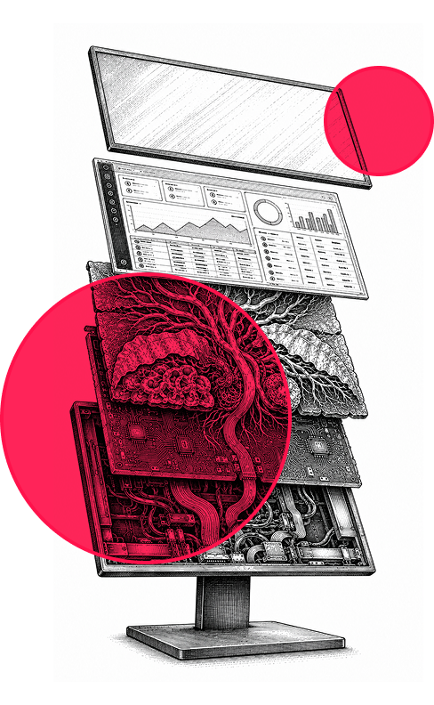
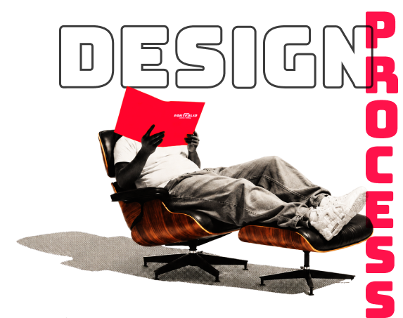

Phase 1: RESEARCH
-
Purpose: Define context, constraints, and stakeholder goals.
Key Outputs: Initial assumptions, stakeholder map, system dependencies.
-
Purpose: Understand real world needs and process friction points.
Key Outputs: Interviews, workflow mapping, pain point synthesis.
-
Purpose: Translate evidence into user needs and opportunity areas.
Key Outputs: Problem definition, empathy maps, validated personas.
Phase 2: UX
-
Purpose: Explore structural and experiential solutions.
Key Outputs: Early flows, architecture sketches, MVP framing.
Phase 3: UX & UI
-
Purpose: Validate and refine through rapid feedback.
Key Outputs: Interactive prototypes, iteration logs.
-
Purpose: Package the solution for real world deployment.
Key Outputs: MVP modules, design documentation, next phase plan.
Eighteen years of practice, eight inside enterprise SaaS, where the elegant loops in the textbooks rarely survive contact with a procurement process. I started with the Double Diamond and kept flattening it, because clients do not buy diamonds, they buy phases with names, outputs, and dates. Three changes stuck: Requirements Assessment at the front, since most projects fail before research begins; Diagnosis instead of Define, because the work is closer to clinical reasoning; and Delivery 1.0, because nothing ships finished.
ISO 9241-210, Contextual Design, Double Diamond, About Face, Change by Design, Wicked Problems in Design Thinking, Mapping Experiences, The Field Guide to Human-Centered Design, Sprint, Co-creation and the New Landscapes of Design, Usability Engineering, Lean UX, The Lean Startup, HEART Framework, The Design of Everyday Things